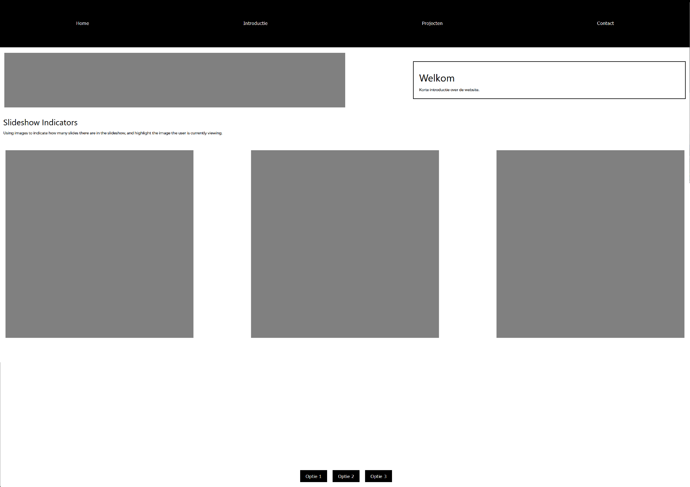
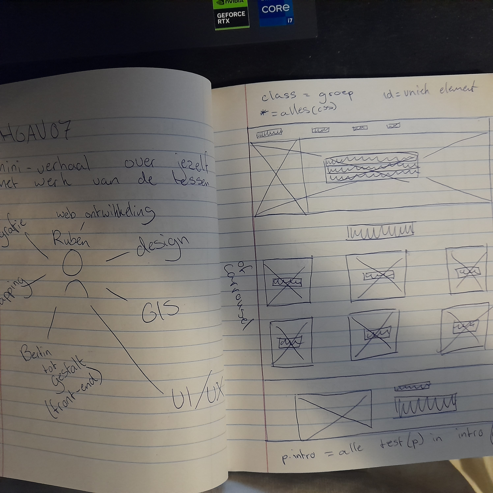
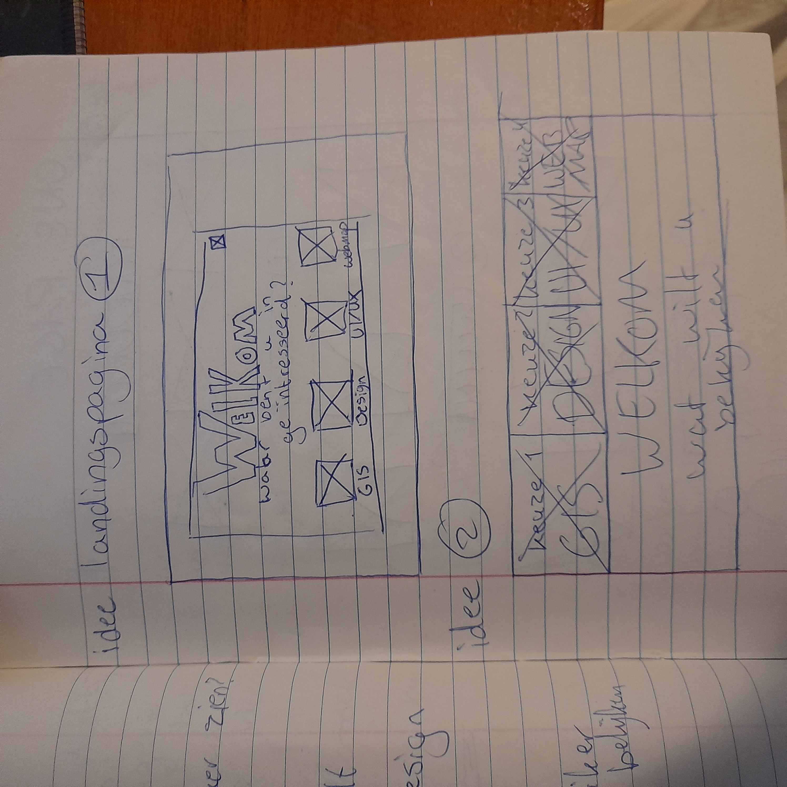
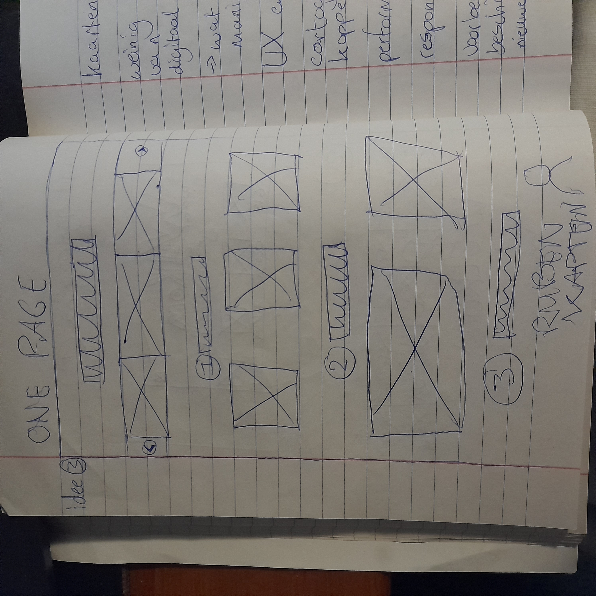
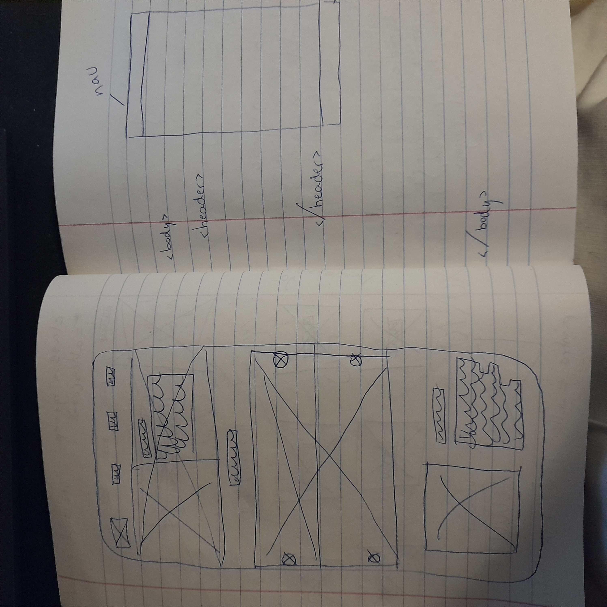
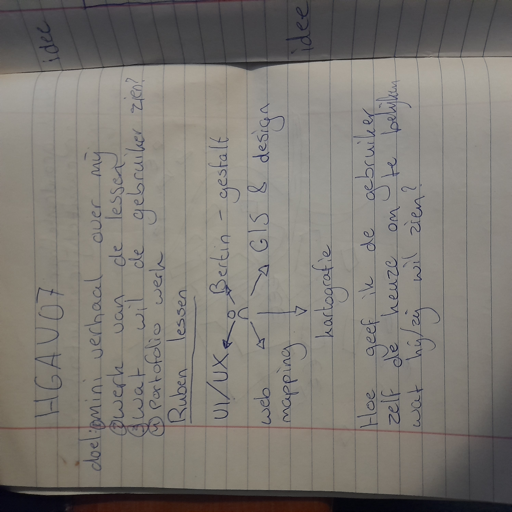

Geodesign
Les 2: Web ontwikkeling en Design
Omdat ik merk dat ik in de eerste paragraaf redelijk veel tekst heb geschreven, zal ik proberen wat korter en bondiger te zijn in mijn reflecties.
In de tweede les hebben we geleerd over de basisprincipes van webontwikkeling en design. We hebben geoefend met HTML, CSS en JavaScript om een interactieve webpagina te maken. De docent heeft ons uitgelegd hoe we elementen kunnen positioneren, stijlen en animeren om een website te maken.
Door deze vaardigheden te leren, heb ik een beter begrip gekregen van hoe websites in elkaar steken en hoe ik ze kan aanpassen aan mijn eigen behoeften. Ook heb ik veel geleerd van de JavaScript inhoud, want dat was weggezakt. Het meeste css kon ik nog wel herinneren, omdat we al eerder een vak hebben gehad genaamd "HWUD" hierover hebben gehad. De opdracht die we in deze les hebben uitgevoerd is het maken van een wireframe voor je website.
Dit is een soort snelle schets van je website, waarbij je de indeling en de structuur van de website vastlegt. Dankzij mijn voorkennis wist ik al dat wireframing een belangrijke stap was in het proces, omdat je de gemaakte keuzes in die stap kan verantwoorden. En dat het was op te verdelen is in twee delen, low-fidelity en high-fidelity. Low-fidelity is een snelle schets, terwijl high-fidelity een gedetailleerde schets is.
Omdat ik dit wist heb ik al eerst een low-fidelity wireframe gemaakt. Maar het werd al snel duidelijk dat de website een gereedschap is om informatie over te brengen. En als je dat dus zelf kan vormgeven, kun je de indeling daarop aanpassen. Hierom heb ik meerdere schetsen gemaakt. Dit is denk ik het belangrijkste wat ik geleerd heb in deze les.





